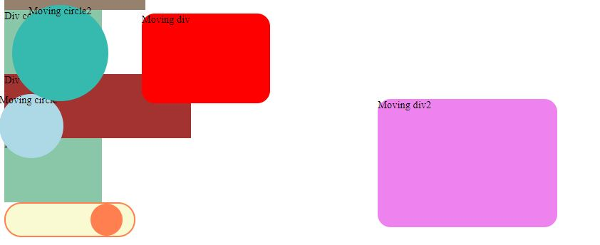

WebDevToolBox
Home
About
Contact
Choose a tool
HTML Input Slider
CSS Margins
CSS Margins In Another
CSS Animation Basic
CSS Animation Loops
JS Events
CSS Animation: Loops

An animation on repeat. Floating through screen and simple transitions. Look at the code below. If you would like to see the page live
Click here
.
HTML
<!DOCTYPE html> <html lang="en"> <head> <meta charset="UTF-8"> <meta name="viewport" content="width=device-width, initial-scale=1.0"> <meta http-equiv="X-UA-Compatible" content="ie=edge"> <link rel="stylesheet" href="./css/styleAnimation.css"> <title>Animation</title> </head> <body> <div class="animated-div">Div color</div> <div class="animated-div2">Div color</div> <div class="animated-div3">Div color</div> <div class="animated-div4">Div color</div> <div class="animated-div5">Div color</div> <div class="moving-div">Moving div</div> <div class="moving-div2">Moving div2</div> <div class="moving-circle">Moving circle</div> <div class="moving-circle2">Moving circle2</div> <div class="button-container"> <div class="button"></div> </div> </body> </html>
CSS
.animated-div, .animated-div2, .animated-div3, .animated-div4, .animated-div5{ width: 100px; height: 100px; background-color: aquamarine; animation-name: someMovement; animation-duration: 5s; animation-iteration-count: infinite; } /* animation from start to destination */ @keyframes someMovement{ from{ background-color: brown; /* change width from this */ width: 300px; } to{ background-color: aquamarine; } } .animated-div2 {-webkit-animation-timing-function: ease-in-out;} .animated-div3 {-webkit-animation-timing-function: ease;} .animated-div4 {-webkit-animation-timing-function: linear;} .animated-div4 {-webkit-animation-timing-function: cubic-bezier(0.755, 0.05, 0.855, 0.06);} .moving-div{ width: 200px; height: 140px; border-radius: 20px; top:110px; left:0px; position: absolute; background-color: red; animation-name: moving; animation-duration: 5s; /* for animation to move always */ animation-iteration-count: infinite; } .moving-div2{ width: 280px; height: 200px; border-radius: 20px; top:110px; left:0px; /* important for movement */ position: absolute; background-color: violet; animation-name: moving2; animation-duration: 5s; /* for animation to move always */ animation-iteration-count: infinite; } .moving-circle{ width: 100px; height: 100px; border-radius: 50%; top:110px; left:0px; /* important for movement */ position: absolute; background-color: lightblue; animation-name: moving3; animation-duration: 11s; /* for animation to move always */ animation-iteration-count: infinite; } .moving-circle2{ width: 150px; height: 150px; border-radius: 50%; text-align: center; top:110px; left:0px; /* important for movement */ position: absolute; background-color: lightsalmon; animation-name: moving4; animation-duration: 11s; /* for animation to move always */ animation-iteration-count: infinite; } /* to work in safari use -webkit */ @-webkit-keyframes moving{ /* @keyframes moving{ */ from{ /* float: left; */ top: 110px; left:0px; } to{ /* float:right; */ top: 250px; left:300px; } } /* to work in safari use -webkit */ @-webkit-keyframes moving2{ /* @keyframes moving{ */ /* top is y-axis, left is x-axis */ 0%{ /* float: left; */ top: 110px; left:0px; } 25%{ /* float: left; */ top: 250px; left:300px; } 50%{ top: 350px; left:600px; } 75%{ top: 500px; left:300px; } 100%{ top: 110px; left:0px; } } /* to work in safari use -webkit */ @-webkit-keyframes moving3{ /* @keyframes moving{ */ /* top is y-axis, left is x-axis */ 0%{ /* float: left; */ top: 110px; left:0px; } 9%{ /* float:right; */ top: 110px; left:90%; } 27%{ /* float:right; */ top: 500px; left:90%; } 54%{ /* float:right; */ top: 500px; left:0px; } 100%{ /* float:right; */ top: 110px; left:0px; } } /* to work in safari use -webkit */ @-webkit-keyframes moving4{ /* @keyframes moving{ */ /* top is y-axis, left is x-axis */ 0% {background-color:lightpink; left:0px; top:0px;} 25% {background-color:lightgreen; left:200px; top:0px;} 50% {background-color:lightyellow; left:200px; top:200px;} 75% {background-color:lightseagreen; left:0px; top:200px;} 100% {background-color:lightcoral; left:0px; top:0px;} } .button-container{ background-color: lightgoldenrodyellow; border: 2px solid coral; width: 200px; height: 50px; border-radius: 40px; } .button{ background-color: coral; width: 50px; height: 50px; border-radius: 50%; position: absolute; animation-name: button-slide; animation-duration: 2s; animation-iteration-count: infinite; } @-webkit-keyframes button-slide{ /* -webkit-animation-timing-function: linear; */ /* -webkit-animation-timing-function:200px linear; */ /* transform: translate(200px;0); */ /* 0%, 100%{transform: translate(200px,0); } */ from{ left: 0%; } to { left: 160px; } }
JS